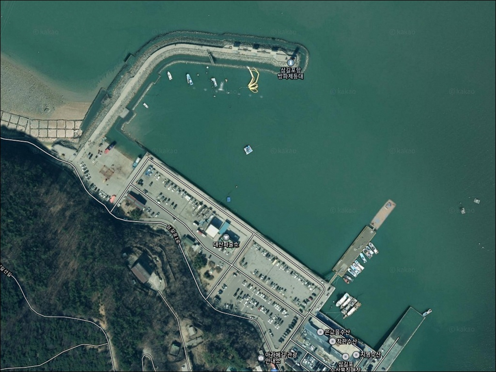
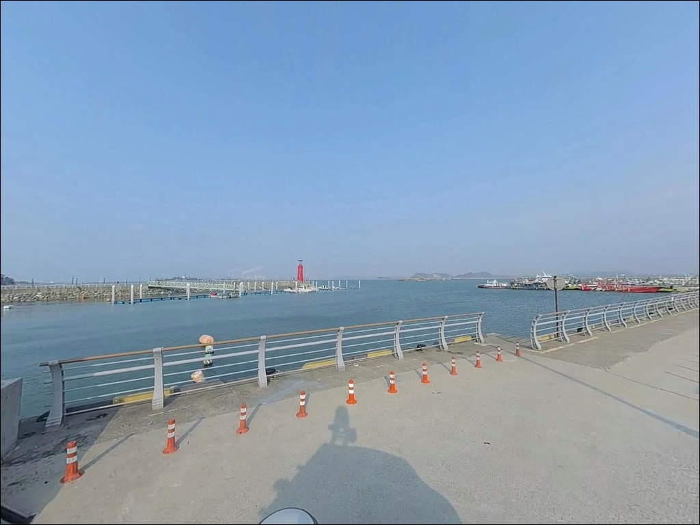
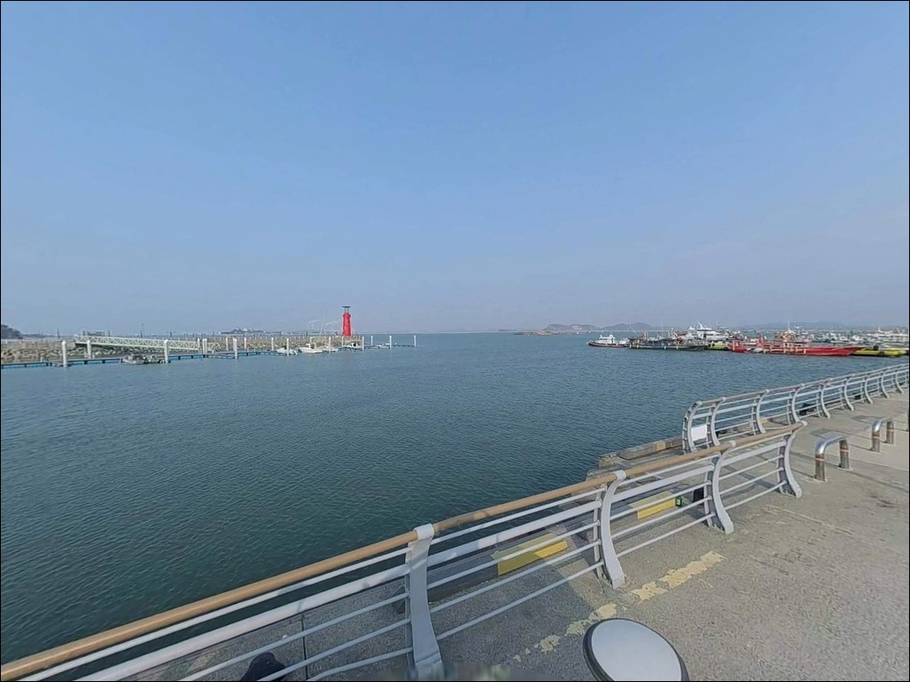
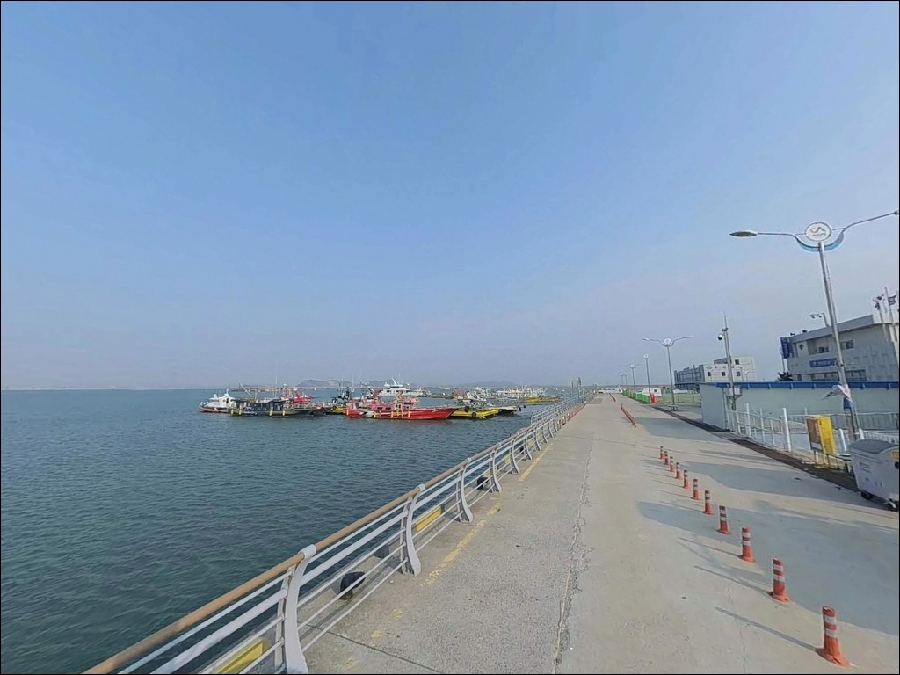
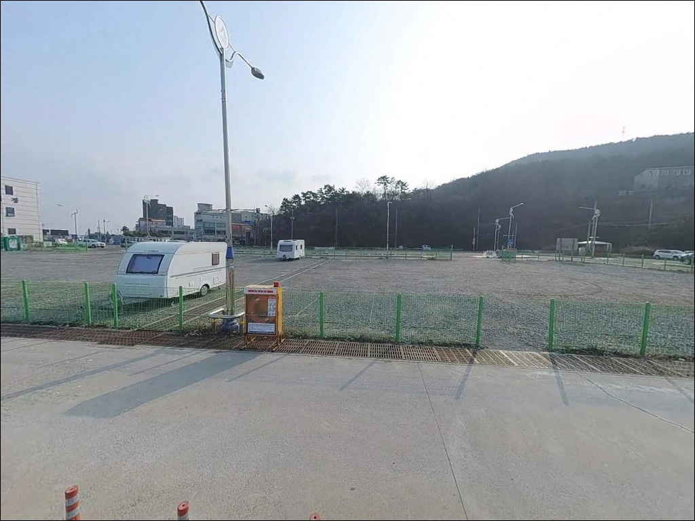
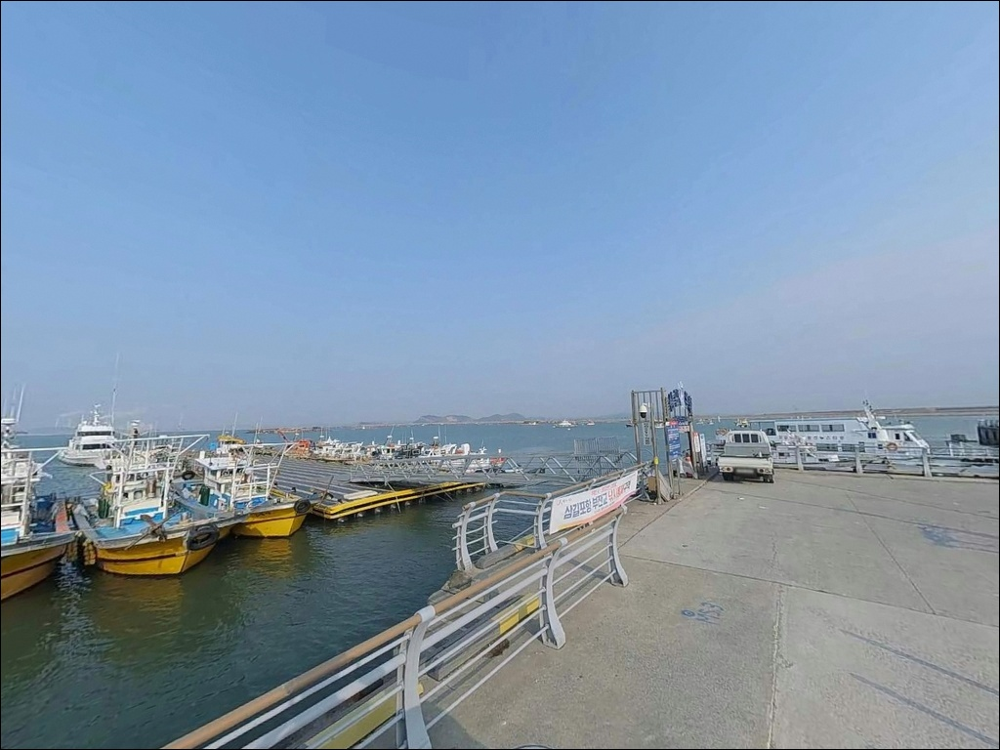
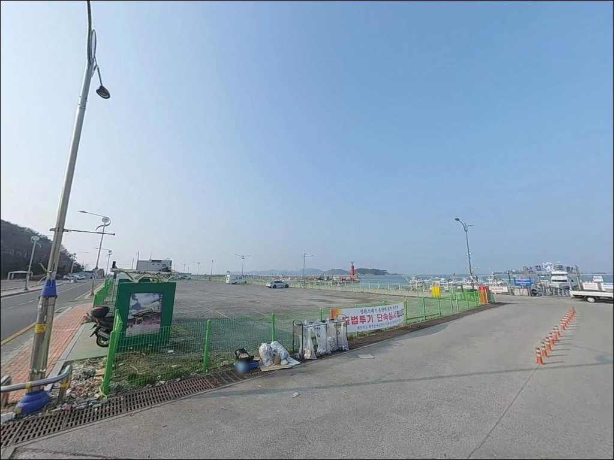
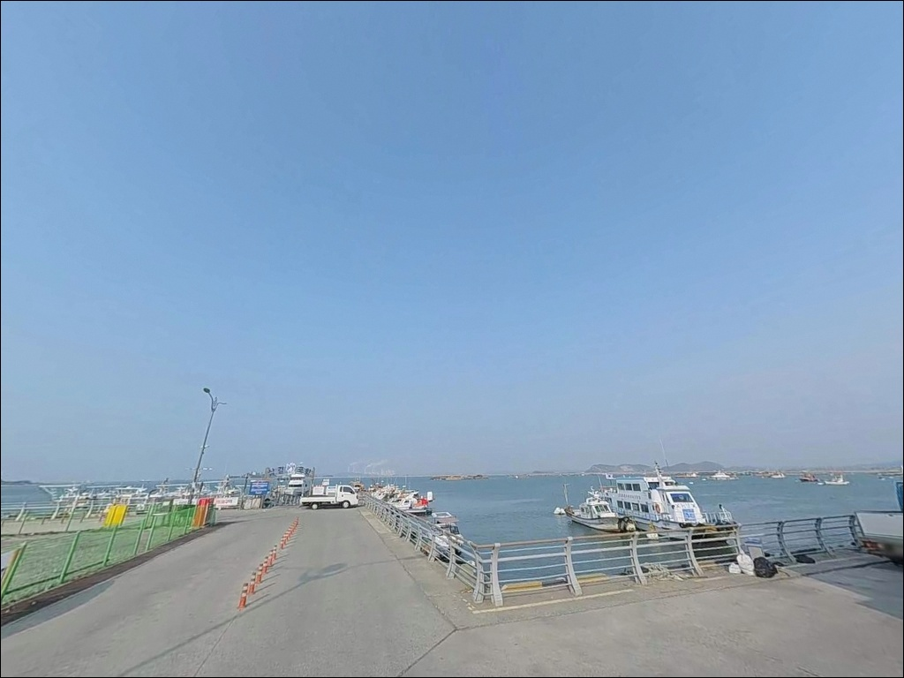
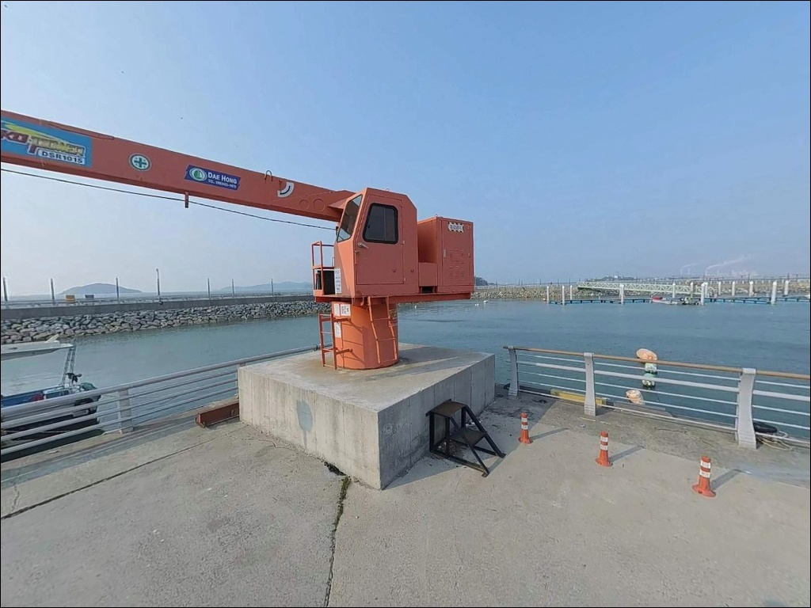

삼길포항, 충남 서산시 바다의 여운이 오래 남는 차박, 낚시 감성 포인트
이 페이지에는 광고(제휴 링크 포함)가 있으며, 광고 링크를 통해 구매하면 운영자가 판매 수익 또는 수수료를 받을 수 있습니다. 포인트 사진: 카카오맵 스카이뷰·로드뷰. 이 페이지의 지도·사진 이미지는 카카오맵의 실제 서비스 이미지와 다를 수 있습니다.


포인트 안내
삼길포항
충남 서산시 대산읍 화곡리 1891
방파제 낚시 포인트로만 알고 찾아갔다가
현장 안내판을 보고 발길을 돌리는 경우가
이 포인트에서 생기는 실수입니다.
삼길포항 방파제·선착장 일부 구역의 낚시 가능 여부는
출발 전 확인이 필요한 항목이며,
현장 도착 후 안내판을 보는 것보다
사전에 파악해두는 것이 헛걸음을 막는 방법입니다.
이 글은 삼길포항의 진입 환경, 낚시 가능 구간별 여건,
대호방조제 수문 구간 공략 조건,
차박 체류 여건에 집중합니다.
조황 단정이나 특정 어종 보장은
이 글의 범위에 포함되지 않습니다.

1. 진입 동선과 주차 여건
삼길포항은 대호방조제를 거쳐 진입하는 구조입니다.
서해안고속도로 서산IC 또는 대산IC를 나와
32번 국도 방향으로 이동한 뒤
대호방조제를 넘으면 항구에 닿습니다.
방조제 구간은 왕복 2차선이며,
방조제 갓길은 주차 단속 구역입니다.
진입 전에 이 점을 인지해두는 것이 좋습니다.
항 초입에 서산시가 조성한 공영주차장이 있습니다.
총 133면 규모로 무료 개방된 공간이며,
국가어항 특성상 도로 정비가 잘 되어 있어
대형 차량도 진입과 회차가 가능한 구조입니다.
주말에는 낚시객·관광객 차량이
이른 시간부터 주차장을 채우는 편이라
오전 입장을 기준으로 출발 시각을 맞추는 것이 유리합니다.
항 내부는 어선 관련 차량과 관광객 차량이 혼재하는 환경입니다.
낚시 목적지에 따라 주차 위치와 동선이 달라지므로,
방파제 구간을 노릴지,
대호방조제 수문 구간을 노릴지
출발 전에 먼저 정해두는 편이
불필요한 이동을 줄입니다.

2. 차박 환경과 야간 체류 여건
삼길포항은 선상어시장, 횟집, 수산물직판장이
항 주변에 밀집해 있는 관광형 어항입니다.
야간에도 항 일대에 조명과 차량 통행이 유지되는 편이라
차박 프라이버시를 기대하기 어려운 환경입니다.
조용한 숙영을 원한다면 이 점을 미리 감안해야 합니다.
주차장 내 텐트·타프를 펼쳐
자리를 여러 칸 차지하는 방식은
주민 민원이 꾸준히 발생해온 구역입니다.
낚시 베이스캠프 역할로는 무난하지만,
차박을 주목적으로 삼기에는
항 주변보다 외곽이 조용한 환경입니다.
대호방조제 방면 외곽 구간이
상대적으로 통행이 적은 편이나,
현장 주차 여건은 도착 후 확인이 필요합니다.
차박 환경이 여의치 않다고 판단된다면
항 주변 모텔급 펜션이 다수 분포해 있어
현실적인 대안으로 전환하기 어렵지 않습니다.


3. 주변 편의시설 및 인프라 현황
삼길포항 주변은 서해 어항 중
편의 인프라가 잘 갖춰진 곳 중 하나입니다.
공영주차장 인근에 GS25가 있으며,
항 일대에 횟집·식당이 다수 분포합니다.
주유소도 항 반경 3km 이내에 있어
연료·식재료·낚시 소품 보충은 현장 반경 안에서 가능한 편입니다.
삼길포항에는 선상어시장이 형성되어
배 위에서 즉석 회를 구입할 수 있습니다.
수산물직판장도 항 인근에 있어
출조 전후 들르기 좋은 구조입니다.
공중화장실은 주차장 인근에 위치해 있습니다.
응급 상황 발생 시
가장 가까운 종합 의료시설은 대산중앙병원입니다.
거리와 이동 시간은 출발 전 미리 확인해두는 편이 좋습니다.

4. 방파제 낚시 가능 여부, 출발 전 확인하지 않으면 자리를 놓칩니다
삼길포항 방파제와 선착장 일부 구역은
낚시 가능 여부를 현장 안내판에서 확인해야 합니다.
서해어업관리단 또는 서산시 담당 부서에
사전 문의하는 것이 헛걸음을 막는
가장 확실한 방법입니다.
현장 도착 후 안내판을 보는 것보다
미리 파악하고 가는 것이 준비의 순서입니다.
서해는 조수간만 차가 큰 해역입니다.
대호만 일대는 물때에 따라
낚시 자리의 수심과 조류 흐름이 크게 달라지는 편이라,
바다타임에서 서산·대산 기준 물때를 확인하고
들물 초반~중반 타이밍을 기준으로 출발 시각을 잡는 것이
기본 전략입니다.
석축과 테트라포드 구간은
물에 젖어 있을 경우 미끄럼이 심합니다.
야간 방파제 진입 시에는 구명조끼를 착용하고,
항 조명이 닿지 않는 구간을 대비해
헤드랜턴을 반드시 챙겨야 합니다.
기상청 해상 예보는 출발 당일 아침에
한 번 더 확인하는 것이 기본입니다.

5. 지형 구조가 만드는 낚시 여건
삼길포항은 빨간 등대가 있는 방파제를 중심으로
내항과 외항이 구분되는 구조입니다.
내항 쪽은 선착장과 어선 접안 구간이 형성되어 있어
수면이 상대적으로 잔잔하고,
외항 방향은 서해 쪽으로 개방된 구조라
조류 흐름이 더 직접적으로 형성되는 편입니다.
방파제 끝단으로 갈수록 수심이 깊어지고
외해 영향을 받는 구간으로 변화합니다.
기수역이란 민물과 바닷물이 교차하는 지점으로,
조류 변화에 따라 어종 구성과 입질 패턴이
뚜렷하게 달라지는 낚시 특성을 가집니다.
대호방조제 수문 인근은 이 기수역 성격이 강하게 나타나는 구간입니다.
수문을 기준으로 석축과 펄이 교차하는 지형이 형성되며,
갑오징어와 쭈꾸미를 기대해볼 수 있는 워킹 낚시 구간으로
알려진 자리입니다.
방파제 석축 주변은 바닥에 굴곡이 있어
우럭·노래미 계열 어종이 서식하기 좋은
지형 조건을 갖추는 편입니다.
내항 안쪽 모래·펄 혼합 구간은
원투 채비를 멀리 보내는 방식에 어울리는 바닥 구조입니다.
최신 조황은 출조 전에 반드시 검색해 보시기 바랍니다.


6. 삼길포항에 어울리는 낚시 방식
원투낚시란 무게가 있는 봉돌 채비를 멀리 던져
바닥층 어종을 공략하는 방식으로,
모래·펄 혼합 바닥 지형에 잘 맞는 스타일입니다.
삼길포항 내항 쪽 구간은
이 방식에 어울리는 바닥 조건을 갖추고 있으며,
붕장어를 노리는 야간 원투 채비와
방파제 끝단을 향해 멀리 보내는 낮 원투가
모두 가능한 구조입니다.
루어낚시는 방파제 외항 구간과
석축 주변을 중심으로 활용할 수 있습니다.
우럭 타겟의 지그헤드 리그나
다운샷 채비가 석축 주변 탐색에 잘 맞습니다.
농어 루어는 항 주변 해변 구간과 수문 일대에서
계절에 따라 노려볼 수 있는 방식입니다.
에깅은 대호방조제 수문 구간이 핵심 자리입니다.
9월~11월 시즌에는 갑오징어와 쭈꾸미를
기대해볼 수 있는 구간으로 알려져 있으며,
에기 채비 외에 스텔스 스타일의 쭈꾸미 채비가
이 구간 지형 조건에 어울립니다.
선상낚시와 좌대낚시는
방파제 낚시 여건이 불확실할 때 유력한 대안입니다.
항 내 좌대낚시 업체가 운영 중이며,
선상 출조 선단도 다수 있습니다.
광어·우럭·쭈꾸미 타겟의 선상 출조는
워킹 낚시만으로 부족할 때
현실적인 선택지가 됩니다.

7. 대안 포인트와 플랜 B 동선
삼길포항에서 낚시 여건이 여의치 않을 때
가장 먼저 이동할 대안은
당진 석문방조제입니다.
같은 대호만 서해 권역에 속한 방조제 낚시 포인트로,
워킹 낚시 자리가 넓고 차량 접근이 용이한 구조입니다.
원투낚시·루어·에깅 채비가 모두 가능하고,
삼길포항과 같은 서해 중부 해역 성격을 공유하는 만큼
채비를 그대로 전환해 쓸 수 있습니다.
도비도항은 삼길포항 북측에 위치한
소형 방파제 구조의 대안 포인트입니다.
차량으로 10분 내외 거리이며,
삼길포항이 주말 혼잡하거나
낚시 자리 확보가 어려울 때
조용한 포인트를 찾는다면 먼저 이동할 경로입니다.
차박 환경이 항 주변에서 여의치 않다고 판단되면,
항 주변 모텔급 펜션을 대안으로 고려하는 것이 현실적입니다.
숙박 시설이 삼길포항 인근에 다수 분포해 있어
현장 상황에 따라 전환이 어렵지 않습니다.

사전 확인이 완비된 낚시꾼에게
삼길포항은 서해 최대 복합 낚시 거점입니다
원투낚시·루어·에깅·선상 출조까지
다양한 방식을 한 권역에서 소화할 수 있는 곳이
삼길포항입니다.
서해 국가어항 중 편의 인프라가 잘 갖춰진 편이라
장거리 이동 없이 하루를 충분히 채울 수 있는 구조입니다.
원투·루어·에깅을 복수로 준비하고,
방파제 낚시 가능 여부를 출발 전 확인하며,
들물 물때에 맞춰 진입하는 낚시꾼이라면
삼길포항이 제 역할을 합니다.
반면 이 세 가지 중 하나라도 빠지면
현장에서 방향을 잃는 상황이 생기기 쉬운 포인트이기도 합니다.
물때 확인, 낚시 가능 구역 사전 파악, 수문 채비 병행 준비,
이 순서를 갖추고 들어가는 것이 삼길포항 공략의 기준입니다.
차박은 낚시 전후 베이스캠프 용도로 활용하는 것이 맞고,
선상 출조 후 하룻밤 묵고 싶은 낚시 여행자라면
항 주변 숙박 시설도 함께 고려하는 것이
더 현실적인 준비입니다.
서해 물때를 읽고 낚시와 이동을 엮을 줄 아는 낚시꾼에게
삼길포항은 충분히 돌아올 이유가 있는 포인트입니다.